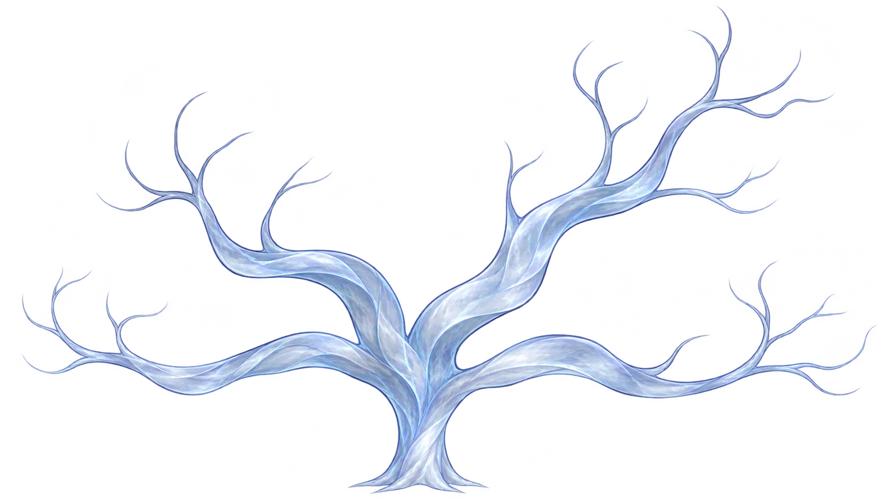

实施前视觉与交互标注 · 一个节点通过示意
职业与技能地图

指标与取数1/3
数据质量0/3
统计判断0/3
建模与表达0/4
✓
数据分析1 / 13 已通过
指标与取数
分支进度 33%
- 1 指标口径 · 已通过
- 2 SQL 表关联
- 3 分组与汇总
页面内使用白色至冰蓝色底面衬托银蓝树身。树图对应四条分支和 12–13 个节点。枝梢露珠在通过后变为三至四片叶子，枝干同步从银蓝染成青绿。每项通过记录对应树心的一圈年轮。窄屏把分支按钮移到树图下方，画面保留当前分支的露珠入口。